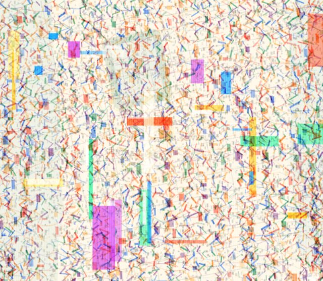
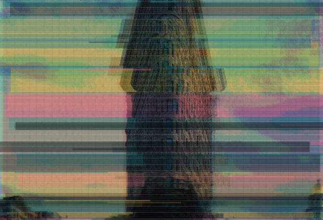
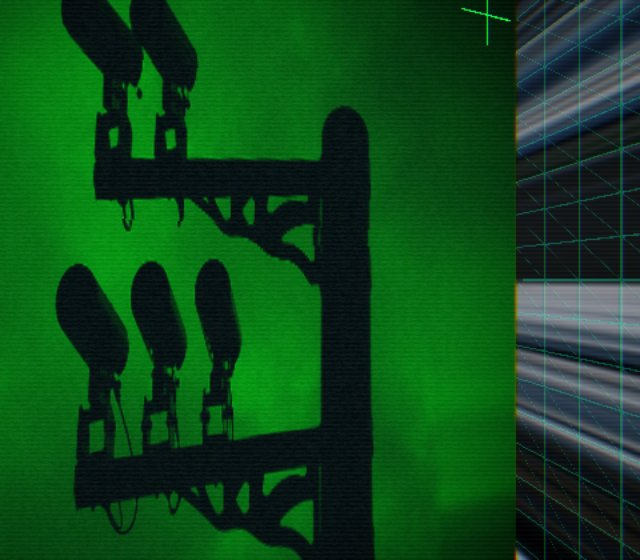
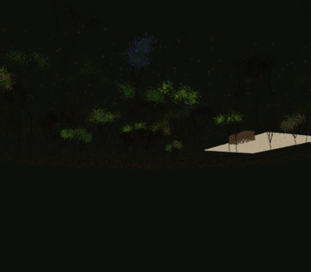
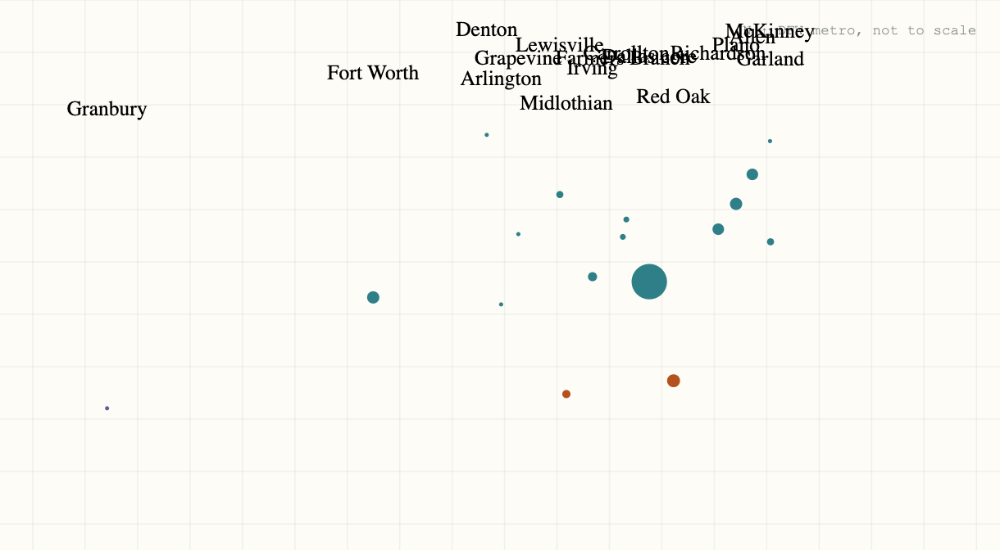

Assignment 01
Garden Review
Vibe coding, style application, draggable browser fragments.
HTML
CSS
JavaScript
Draggable UI
 garden.html
Assignment 02 / p5.js 01
Geodata Weaving Map Selector
A p5.js selector that turns imagined map data into woven color, noise, and filters.
p5.js
Generative Map
Interaction
garden.html
Assignment 02 / p5.js 01
Geodata Weaving Map Selector
A p5.js selector that turns imagined map data into woven color, noise, and filters.
p5.js
Generative Map
Interaction

geodata weaving
Assignment 02 / p5.js 02
City Signal Glitch
Open architectural photos pushed through glitch, scanline, and riso-like color systems.
p5.js
Glitch
Open Photos
JavaScript

city signal glitch
Assignment 02 / Three.js 01
The Panopticon Skybox
A cube-map room of six surveillance perspectives, assembled into one reflective probe at its center.
Three.js
Cube Camera
Shaders
Render Targets

panopticon skybox
Assignment 02 / Three.js 02
Dropout Garden
A procedural point-cloud garden that fails to resolve on purpose — canopy points flicker with scan confidence, blossoms exist only in season, and a "Classified" mode deletes everything the scanner can't price.
Three.js
Point Cloud
Procedural
Shaders

dropout garden
Assignment 03 / D3.js 01
The Southbound Data Center
A bubble map of real, named DFW data center facilities, tallied from a public market directory, showing the market's push south of its historic north-Dallas core.
D3.js
SVG
Public Data

the southbound data center